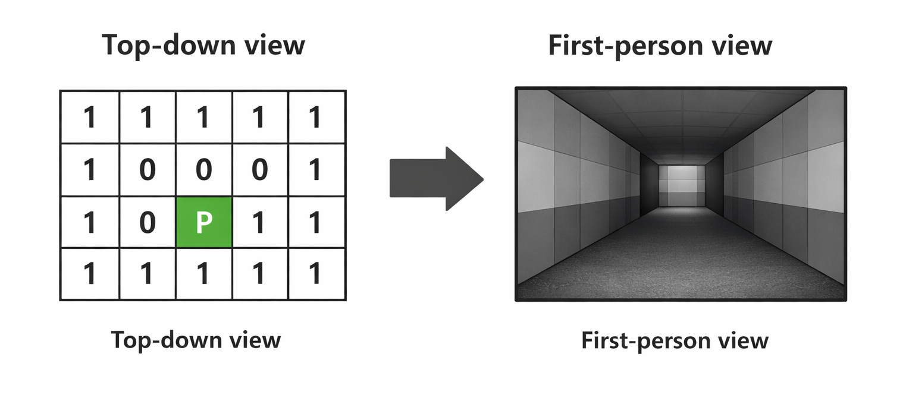
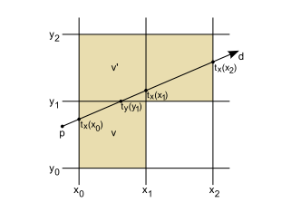
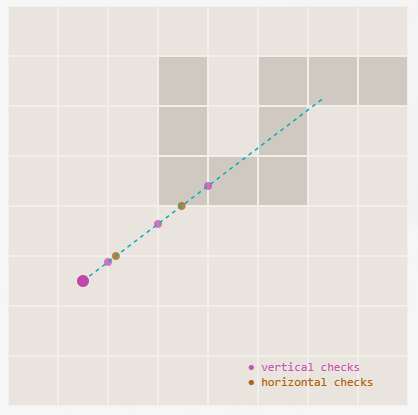
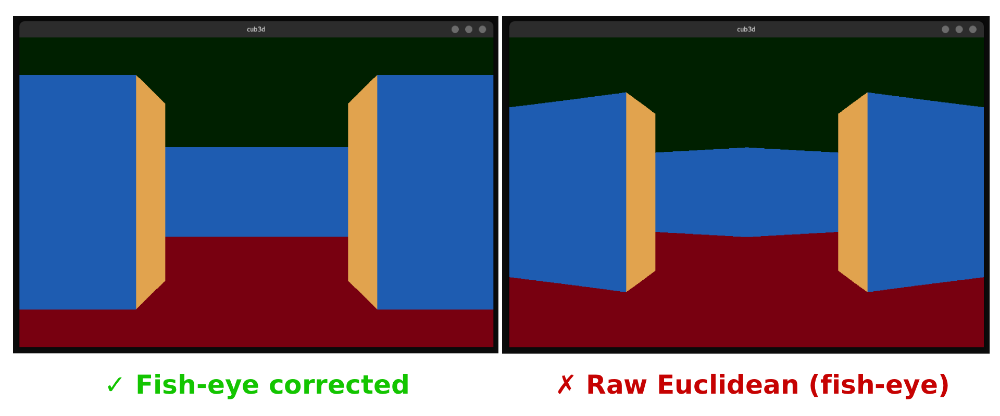
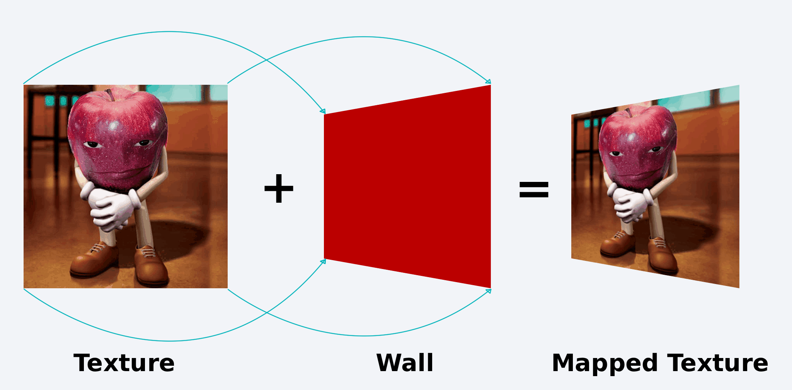
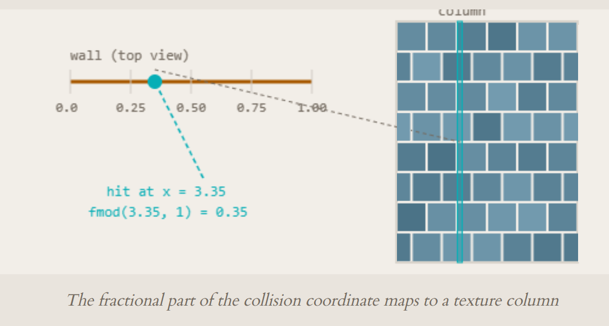
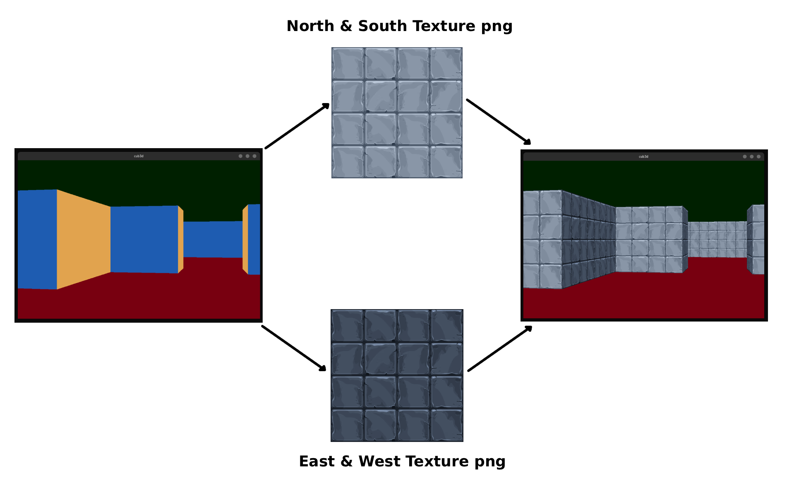
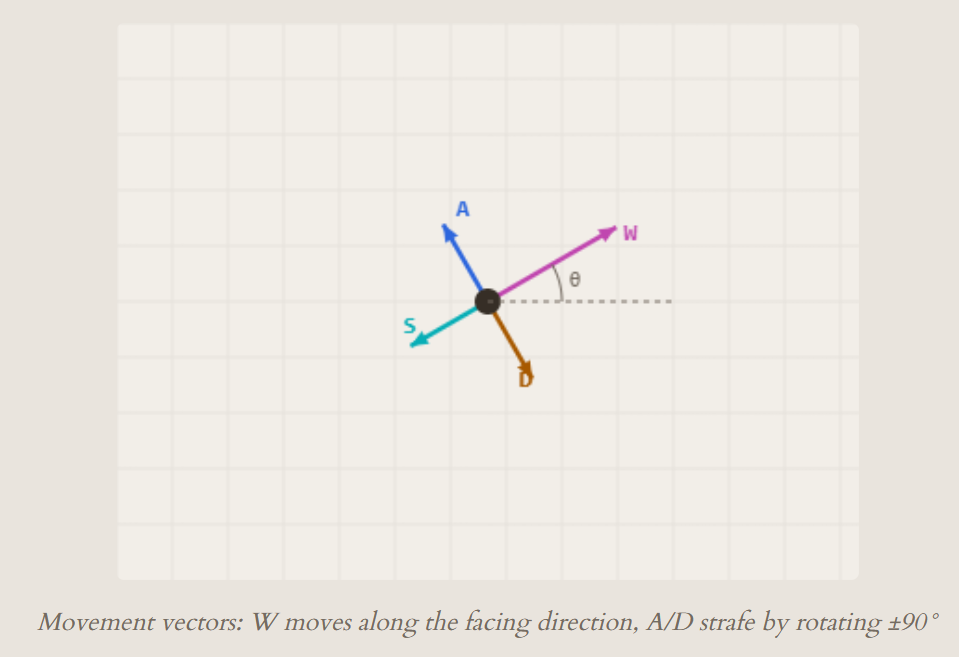

Cub3d: A 3D game from scratch in C using Raycasting
Building a Raycasting 3D Engine from Scratch in C
How we turned a 2D grid into a first-person 3D world using nothing but math, a flat pixel buffer, and zero GPU shaders.

This article walks through every piece of our cub3D engine a raycaster written entirely in C. We'll cover the math, the algorithms, and the actual code that makes it work.
The source code is available on my GitHub: cub3D
Overview: What is Raycasting?

A raycaster fakes 3D by exploiting a constraint: the world is a 2D grid, the camera can only rotate horizontally, and all walls are the same height. Under these rules, we can reduce the entire rendering problem to one ray per screen column.
The rendering pipeline for every frame:
Clear screen (sky/ground) → Cast 1040 rays → Find wall hits → Compute strip height → Sample texture → Draw column
The game loop calls update() every frame:
void update(void *all)
{
draw_sky_ground(all); // fill background
cast_rays(all); // find all wall intersections
draw_all_wall_strips(all); // render textured columns
}
That's the entire frame. Let's break down each step.
Part 1: The Map
The world exists as a 2D character grid. 1 means wall, 0 means empty, and a cardinal letter (N, S, E, W) marks the player spawn and initial facing direction.
1111111
1000001
100N001
1111111
N = Player is facing North at spawn, S = Player is facing South at spawn, E = Player is facing East at spawn, W = Player is facing West at spawn
The parser reads this from a .cub file and stores it as a char ** array. Each cell maps to a 1×1 unit in world space — so the player's position is a floating-point coordinate within this grid.

Part 2: Casting Rays — The DDA Algorithm
For each of the 1040 screen columns, we cast a ray from the player. The ray angle is spread across the field of view:
$$\theta_x = \theta_{player} - \frac{FOV}{2} + x \cdot \frac{FOV}{W}$$
where $\theta_{player}$ is the player's current rotation angle, $FOV$ is the field of view, and $W$ is the screen width.
ray_angle = player.rotation_angle - (FOV / 2); // leftmost ray
// for each column:
ray_angle += FOV / SC_WIDTH; // step to next column
This gives us 1040 evenly-spaced rays fanning out from the player. Each ray needs to find the first wall it hits. We do this with DDA (Digital Differential Analyzer) — a grid traversal algorithm.

Why DDA?
A naive approach would step along the ray in tiny increments and check the grid cell at each point. This is slow and imprecise. DDA instead jumps directly from one grid boundary to the next — it only checks the exact points where the ray crosses a grid line.

The key insight: we test horizontal and vertical grid crossings independently, then pick whichever wall hit is closer.
Finding the First Intersection
When a ray leaves the player, we need to find where it first crosses a horizontal grid line and where it first crosses a vertical grid line.
For horizontal grid intersections, the first intersection point is:
$$y_{h} = \begin{cases} \lceil P_y \rceil & \text{if ray faces down} \\ \lfloor P_y \rfloor & \text{if ray faces up} \end{cases}$$
$$x_{h} = P_x + \frac{|P_y - y_h|}{\tan(\theta)}$$
For vertical grid intersections:
$$x_{v} = \begin{cases} \lceil P_x \rceil & \text{if ray faces right} \\ \lfloor P_x \rfloor & \text{if ray faces left} \end{cases}$$
$$y_{v} = P_y + |P_x - x_v| \cdot \tan(\theta)$$
For the vertical first intersection (where the ray first crosses an x-integer boundary):
static void get_ver_intersection(t_all *all, t_ray *ray)
{
t_player *p = &all->player;
t_vector intr_point;
if (get_ver_angle_direction(ray->ray_angle) == right)
{
// ray faces right → next vertical line is ceil(x)
intr_point.x = ceil(p->position.x);
intr_point.y = p->position.y
+ fabs(p->position.x - intr_point.x) * tan(ray->ray_angle);
}
else
{
// ray faces left → next vertical line is floor(x)
intr_point.x = floor(p->position.x);
intr_point.y = p->position.y
+ fabs(p->position.x - intr_point.x) * tan(2 * PI - ray->ray_angle);
}
ray->vertical_intersection = intr_point;
}
The horizontal first intersection works the same way but with x and y swapped, using 1/tan(θ) instead of tan(θ):
static void get_hor_intersection(t_all *all, t_ray *ray)
{
t_player *p = &all->player;
t_vector intr_point;
if (get_hor_angle_direction(ray->ray_angle) == bottom)
{
intr_point.y = ceil(p->position.y);
intr_point.x = p->position.x
+ fabs(p->position.y - intr_point.y) / tan(ray->ray_angle);
}
else
{
intr_point.y = floor(p->position.y);
intr_point.x = p->position.x
+ fabs(p->position.y - intr_point.y) / tan(2 * PI - ray->ray_angle);
}
ray->horizontal_intersection = intr_point;
}
Why
tan(2π - θ)? When the ray faces the opposite direction, the delta has the wrong sign. Using2π - θflips the tangent to give the correct offset in the reflected direction. It's equivalent to negating the tangent but avoids sign ambiguity near 0° and 180°.
Stepping Through the Grid
Once we have the first intersection, we step along the grid. Each step moves exactly one grid unit along either x or y, and we compute the other coordinate using tan(θ):
- Vertical stepping: Increment $x$ by ±1 per step, compute $\Delta y = \text{step} \cdot \tan(\theta)$
- Horizontal stepping: Increment $y$ by ±1 per step, compute $\Delta x = \frac{\text{step}}{\tan(\theta)}$
static void get_ver_steps(t_all *all, t_ray *ray)
{
double delta_y;
t_vector next_coll;
int i = 0;
int x_step_size;
assign_vec_to_vec(&next_coll, ray->vertical_intersection);
// +1 if ray faces right, -1 if left
get_grid_size(&x_step_size,
get_ver_angle_direction(ray->ray_angle) == right);
while (!check_if_ray_hit_ver_wall(all, ray, next_coll))
{
// step one grid unit in x, compute y offset
delta_y = (x_step_size * i) * tan(ray->ray_angle);
next_coll.x = ray->vertical_intersection.x + (x_step_size * i);
next_coll.y = ray->vertical_intersection.y + delta_y;
i++;
}
ray->vertical_intersection = next_coll;
}
The horizontal stepping is symmetric — step in y, compute x using 1/tan(θ).
Choosing the Closest Hit
After both checks complete, we have two candidates: the horizontal-hit point and the vertical-hit point. We pick the closer one using squared distance (avoiding an unnecessary sqrt):
$$d^2 = (P_x - C_x)^2 + (P_y - C_y)^2$$
static void choose_closest_collision(t_all *all, t_ray *ray)
{
double vert_distance;
double hori_distance;
t_vector player_pos = all->player.position;
// get_line_length returns dx*dx + dy*dy (squared distance)
vert_distance = get_line_length(player_pos, ray->vertical_intersection);
hori_distance = get_line_length(player_pos, ray->horizontal_intersection);
if (vert_distance > hori_distance)
{
// horizontal wall was closer → N or S face
get_hor_wall_strip_color(ray);
ray->collision_point = ray->horizontal_intersection;
}
else
{
// vertical wall was closer → E or W face
get_ver_wall_strip_color(ray);
ray->collision_point = ray->vertical_intersection;
}
}
Which face was hit also determines which texture we'll use — the ray knows it hit a North, South, East, or West wall.
Part 3: From Distance to Pixels — Wall Rendering
We now have, for each screen column, the exact point where the ray hit a wall. The next step is converting that 3D-looking distance into a pixel-height on screen.
Computing Wall Height
The distance from the player to the projection plane (the imaginary screen in front of them) is a constant derived from the screen width and FOV:
$$d_{proj} = \frac{W / 2}{\tan(FOV / 2)}$$
We precompute this once:
all->dist_to_proj_plane = (SC_WIDTH / 2.0) / tan(FOV / 2.0);
Then the wall strip height for a given ray is simply:
$$h_{wall} = \frac{d_{proj}}{d_{\perp}}$$
static double get_wall_height(t_all *all, t_ray *ray)
{
double distance_to_wall = get_distance_to_wall(all, ray);
return (all->dist_to_proj_plane / distance_to_wall);
}
Closer walls → smaller denominator → taller strip. Farther walls → larger denominator → shorter strip. The relationship is inversely proportional — exactly how perspective works in real life.
The strip is drawn centered vertically on screen:
$$y_{start} = \frac{H - h_{wall}}{2}$$
The strip is drawn centered vertically on screen:
Screen column x:
y=0 ┌──────────┐
│ sky │ Upper half = ceiling color
│ │
y_start ├──────────┤ ─┐
│ │ │
│ texture │ │ h_wall pixels
│ │ │
├──────────┤ ─┘
│ ground │ Lower half = floor color
y=H └──────────┘
The Fish-Eye Problem
If we use raw Euclidean distance, walls curve outward at the screen edges — this is the fish-eye effect. To fix it, we project the distance onto the player's forward-facing direction:

The fix is one line of trigonometry:
static double get_distance_to_wall(t_all *all, t_ray *ray)
{
double dx = all->player.position.x - ray->collision_point.x;
double dy = all->player.position.y - ray->collision_point.y;
double euclidean = sqrt(dx * dx + dy * dy);
// Project onto the player's forward axis to remove fish-eye
return (euclidean * cos(ray->ray_angle - all->player.rotation_angle));
}
The cos(ray_angle - player_angle) factor collapses rays at the screen edges back to their perpendicular distance, making the wall appear flat:
$$d_{\perp} = d_{euclidean} \cdot \cos(\theta_{ray} - \theta_{player})$$
Part 4: Texture Mapping
Flat-colored walls would be boring. We map a PNG texture onto each wall strip.

Which Texture Column?
When a ray hits a wall, the collision point's fractional coordinate tells us where on the wall face we hit. If we hit a north/south-facing wall (horizontal wall line), the x-coordinate's fractional part gives us the texture column:
- N/S walls (horizontal hit): $x_{tex} = \text{fmod}(C_x, 1) \cdot W_{tex}$
- E/W walls (vertical hit): $x_{tex} = \text{fmod}(C_y, 1) \cdot W_{tex}$
if (ray->col_wall_color == N_O || ray->col_wall_color == S_O)
x_texture = fmod(ray->collision_point.x, 1) * texture->width;
else
x_texture = fmod(ray->collision_point.y, 1) * texture->width;

Sampling Pixels Vertically
For each pixel row i in the wall strip, we compute which texture row to sample:
$$y_{tex} = i \cdot \frac{H_{tex}}{h_{wall}}$$
y_txt = (int)((double)texture->height * ((double)yPos / (double)wall_height));
The pixel is read directly from the raw RGBA byte array of the loaded PNG:
return (*(int *)(texture->pixels + y_txt * texture->width * 4 + x_txt * 4));
Each pixel is 4 bytes (R, G, B, A). We index into the flat array with (row * width + col) * 4.
Color Byte Swapping
The MLX42 library expects colors in RRGGBBAA format as a 32-bit integer, but the texture stores them in a different byte order. We swap red and blue channels:
int swap_red_blue(int pixel_color)
{
int red;
int blue;
pixel_color = (pixel_color << 8) | (int)255; // shift and set alpha
red = (pixel_color >> 24) & 0xFF;
blue = (pixel_color >> 8) & 0xFF;
pixel_color &= ~(0xFF000000 | 0x0000FF00); // clear R and B
pixel_color |= (blue << 24) | (red << 8); // swap them
return (pixel_color);
}
Why swap? PNG files store pixels as RGBA bytes in memory. When we cast those bytes to an
int, endianness determines the order. On little-endian systems (x86), the bytes appear reversed. The swap function corrects this so the MLX42 pixel buffer gets the right color channels.

Part 5: Player Movement & Collision
Vector-Based Movement
Movement is computed from the player's facing angle. The movement vector is:
$$\vec{v} = \begin{pmatrix} \cos(\theta) \cdot speed \\ \sin(\theta) \cdot speed \end{pmatrix}$$
t_vector get_player_end_of_sight_stack(t_all *all, double dist)
{
t_vector end_of_sight;
end_of_sight.x = cos(all->player.rotation_angle) * dist;
end_of_sight.y = sin(all->player.rotation_angle) * dist;
return (end_of_sight);
}
This gives a direction vector scaled by the movement speed. For strafing (moving sideways), we temporarily rotate the player's angle by 90° before computing the vector, then restore it:
void move_player(t_all *all)
{
double player_original_rotation = all->player.rotation_angle;
if (p->walk_direction.x == WALK_RIGHT)
p->rotation_angle += HALF_PI; // +90°
if (p->walk_direction.x == WALK_LEFT)
p->rotation_angle += HALF_PI + PI; // +270° (≡ -90°)
if (p->walk_direction.y == WALK_BACK)
p->rotation_angle += PI; // +180°
t_vector vec = get_player_end_of_sight_stack(all, MOVE_SPEED);
if (!check_player_collision(all, vec))
{
p->position.x += vec.x;
p->position.y += vec.y;
}
p->rotation_angle = player_original_rotation; // restore
}

Wall Collision Detection
Before applying the movement, we check if the destination cell is a wall:
int check_if_a_wall(t_all *all, t_vector to_check)
{
int my_x = to_check.x;
int my_y = to_check.y;
if (my_x < 0 || my_y < 0
|| my_x >= all->data.map_width
|| my_y >= all->data.map_height)
return (1); // out of bounds = wall
if (all->data.map_copy[my_y][my_x] == '1')
return (1); // wall cell
return (0);
}
The position (floating-point) is truncated to grid coordinates. If the target cell is '1' or out of bounds, the move is rejected and the player stays in place.
Part 6: Putting It All Together
The complete rendering flow for one frame:
1. Clear the screen — Draw ceiling color on the top half, floor color on the bottom half.
2. Cast 1040 rays — For each screen column, calculate ray angle, find horizontal and vertical grid intersections using DDA, pick the closer hit.
3. Compute wall height — Correct for fish-eye using cosine projection, compute the strip height from the projection plane distance.
4. Draw textured strip — Sample the correct texture column and row for each pixel, swap byte order, draw to the pixel buffer.
The entire frame is drawn to a single mlx_image_t pixel buffer, which MLX42 uploads to the GPU for display. No 3D graphics API, no shaders, no triangles — just math and a flat array of pixels.
void update(void *all)
{
draw_sky_ground(all);
cast_rays(all);
draw_all_wall_strips(all);
}
Three function calls. One frame. 60 times per second.
Demo

Credits
This project was developed by @d33znu75 and @islamimehdi as part of the 42 curriculum in 1337 School.